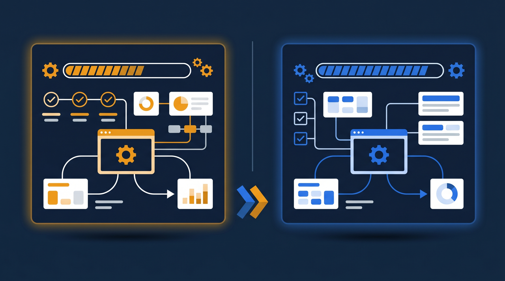
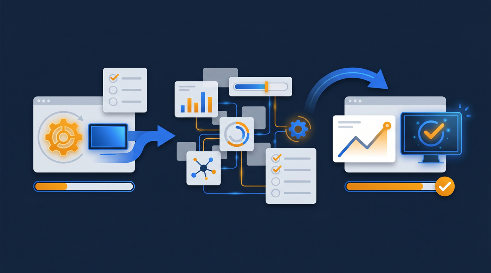
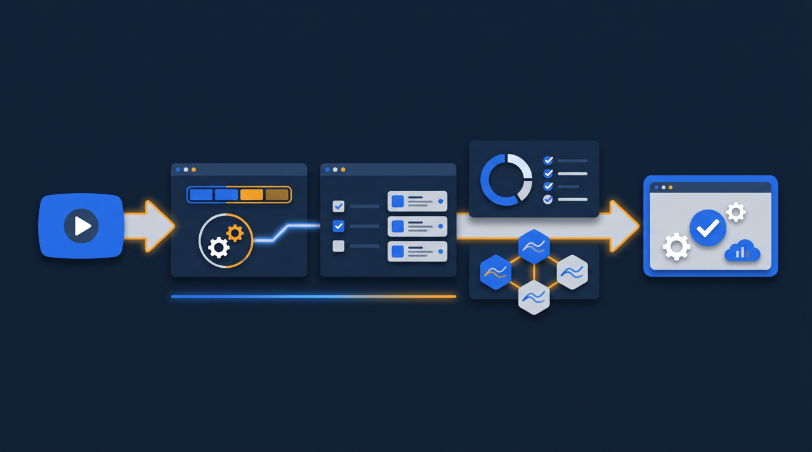

「せっかくeラーニングを入れたのに、半分も見てもらえていない」——導入後にこの壁にぶつかる会社は、本当に多いんです。受講されないのは社員のやる気のせいだと片づけてしまいがちですが、実は受けにくい設計になっていることが背景にあるケースが少なくありません。この記事では、eラーニングの受講率を高めるために、コースの作り方や通知、修了条件、スマホ対応といった学習設計のポイントを、現場目線で整理します。

なぜeラーニングは受講されないのか
まず押さえておきたいのは、受講率が低い原因は一つではない、ということです。「社員が真面目に受けない」という話で終わらせてしまうと、対策の打ちようがありません。受けない人を責める前に、そもそも受けにくくなっていないかを疑ってみる、というのが出発点になります。
現場を見ていると、受講が進まない背景には、いくつか共通したパターンがあります。1本の動画が60分もあって、見始めるのに気合いがいる。受講の期限がいつなのか、そもそも何のための研修なのかが伝わっていない。会社のパソコンでしか見られず、業務の合間に開く時間が取れない。こうした要素が重なると、「あとで見よう」がずっと続いて、結局期限が来てしまうわけです。
厚生労働省の能力開発基本調査では、自己啓発や教育訓練を受けるうえでの障害として、忙しくて時間が取れないことが多くの労働者から挙げられています。裏を返せば、まとまった時間がなくても少しずつ進められる設計にすれば、受講のハードルはぐっと下がるということです。受講率の話は、意欲の問題というより設計の問題として捉え直すと、打てる手が見えてきます。
受講率を左右する5つの要素
受講率に効く要素を整理すると、だいたい次の5つに集約できることが多いです。
- コースの長さ（1本が長すぎると見始められない）
- 受講の目的と期限が本人に伝わっているか
- 受講できる端末（パソコンだけか、スマホでも見られるか）
- 進捗が本人に見えるか（あと何本かが分かるか）
- 受講を後押しする声かけ・通知があるか
この5つは、どれか一つを直せば解決するというものではなく、組み合わせで効いてきます。たとえば動画を短く区切っても、スマホで見られなければ現場スタッフは受講できませんし、スマホ対応しても目的が伝わっていなければ後回しにされます。一つずつ潰していくというより、受講者が最初の1本を開いてから最後まで終えるまでの流れ全体を見直す、という発想が大切なんですよね。
ある介護施設の例ですが、感染対策の研修を導入したものの、受講率がなかなか上がりませんでした。理由を聞いてみると、スタッフは日中ほとんどパソコンに触れず、受講できるのは休憩中のスマホだけ。ところが当時のeラーニングはパソコン前提の作りで、スマホでは動画が途中で止まってしまっていたそうです。つまり、やる気の問題ではなく、受ける手段がなかった。この一点を直しただけで、受講率が大きく変わったといいます。
コース構成を見直す——「短く・分けて・つなげる」
受講率を上げるうえで、最初に手をつけたいのがコース構成です。ここが受講のしやすさを大きく左右します。
1本を短く区切る
一番効果が出やすいのが、動画を短く区切ることです。60分の研修を1本のまま置くと、見始めるのに「まとまった時間」が必要になります。これを章ごとに数分から十数分程度に分けると、休憩時間や移動中のスキマでも「1本だけ見ておこう」と思えるようになります。見始めるハードルが下がると、それだけで受講は進みやすくなるわけです。
章ごとに区切りをつける
短く分けるだけでなく、それぞれの章が独立して見られるようにしておくことも大切です。途中で中断しても、次に開いたときに「どこまで見たか」が分かり、続きから再開できる。長い動画を一本道で見せると、途中で止まったときにまた最初から、という気分になりがちですが、章で区切れば中断しても戻りやすくなります。
学ぶ順番と到達点を示す
コース全体で「何本あって、今どこにいて、あと何本か」が見える状態にすると、受講者は見通しを持って進められます。先が見えないと人は動きにくいものですが、ゴールまでの道のりが見えると、最後まで走り切りやすくなる。進捗バーのように、残りが一目で分かる仕組みがあると効果的です。

目的と期限を伝える——「なぜ・いつまで」を明確にする
コースを整えても、受講者が「なぜこれを受けるのか」を分かっていないと、受講は後回しにされがちです。ところで、案内のメールに「研修動画を配信しました」とだけ書いて済ませていないでしょうか。これだと、受け手にとっては数ある通知の一つに埋もれてしまいます。
効くのは、受講する理由を一言添えることです。「新しい接客ルールが来月から始まるので、その前に全員に見てほしい」というように、いつから何のために必要かが分かると、受講の優先順位が上がります。人は意味の分からない作業より、理由の分かる作業のほうが動きやすいものですよね。
あわせて、受講期限をはっきり示すことも大切です。「都合のいいときに」では、その「いつか」が永遠に来ません。「今月末まで」と区切ると、締め切り効果で受講が進みやすくなります。ただし、期限だけを強く押し出すと、形だけ再生して中身が頭に入らない受講になりかねません。理由と期限はセットで伝える、というのがポイントになります。
通知とリマインドの設計——「未受講者だけに、ほどよく」
受講を後押しするうえで、通知は強力な手段です。ただし、使い方を誤ると逆効果になります。全員に何度も「受講してください」を送ると、すでに受けた人には煩わしく、未受講の人には「またか」と無視される。通知は量ではなく、当てどころが肝心なんです。
理想は、未受講者だけに、ほどよいタイミングで届くことです。配信したとき、期限の数日前、期限の当日、というように区切りのよいタイミングに絞り、しかもすでに受けた人には送らないようにする。こうすると、通知の総量を抑えながら、必要な人にだけ後押しが届きます。
学習管理システム（LMS）には、未受講者を自動で抽出してリマインドを送れるものがあります。担当者が毎回受講状況を確認して、未受講者のリストを作って、メールを書いて……という手作業を繰り返さずに済むわけです。通知の設計を仕組みに任せられると、受講率を保つ運用がぐっと楽になります。
スマートフォン対応——現場が受けられる環境をつくる
受講率を語るうえで、端末の話は避けて通れません。特に、現場スタッフや多拠点の従業員を抱える会社では、スマートフォンで受けられるかどうかが受講率を大きく左右することがあります。
考えてみれば当然で、店舗や工事現場、施設で働く人は、日中パソコンの前に座る時間がほとんどありません。受講できるのは、通勤の電車のなか、休憩時間、業務後のわずかな時間。そのときに手元にあるのはスマホです。eラーニングがパソコン前提の作りだと、こうした人たちは物理的に受講できないわけです。
スマホで快適に見られると、受講のハードルは大きく下がります。短く区切った動画とスマホ対応の組み合わせは特に相性がよく、「電車のなかで1本」「休憩中に1本」という受け方ができるようになります。J-Net21などの中小企業向け情報でも、限られた人手や時間のなかでITをどう活かすかは繰り返し取り上げられていますが、受講環境をスマホまで広げることは、その身近な一例だと言えます。
ここで一点、付け加えておきたいことがあります。スマホ対応というと、ただ画面に映ればよいと考えてしまいがちですが、実際には「縦向きでも見やすいか」「通信量が重すぎないか」「ログインが煩雑でないか」といった細かい使い勝手が、受講の続きやすさに効いてきます。たとえば、毎回長いIDとパスワードを入力しなければ見られないとなると、それだけで開く気持ちが削がれます。受講者が手元のスマホで、思い立ったときにすっと開ける。この「すっと開ける」状態をつくれているかどうかが、受講率を地味に左右するんですよね。技術的に見られることと、実際に見たくなることのあいだには、こうした使い勝手の差があるわけです。
修了条件と確認テストで「受けただけ」を防ぐ

受講率を追いかけていると、つい「再生されたかどうか」だけを見てしまいがちです。けれど、流し見で再生だけ進んでいる状態では、研修の意味が薄れてしまいます。そこで効いてくるのが、修了条件と確認テストです。
ここでひとつ補っておきたいのが、受講率の数字をどう読むか、という視点です。全体の受講率が80パーセントだとして、それを高いと見るか低いと見るかは、内訳によって変わります。残りの20パーセントが特定の部署や特定の働き方の人に偏っているなら、その層に受講のハードルがあるのかもしれません。平均だけを追っていると、こうした偏りに気づけないわけです。受講率は一つの数字として眺めるより、誰が受けていないのかという内訳まで見ると、次の打ち手が具体的になります。たとえば、現場スタッフの受講だけが遅れているなら、スマホ対応や動画の長さに改善の余地があると分かりますよね。
たとえば、動画を最後まで視聴したうえで確認テストに合格して初めて修了、という条件にすると、ただ再生するだけでは終われなくなります。テストに合格できなければ、その章をもう一度受ける。これによって、受講率という数字が「受けた」だけでなく「分かった」に近づいていくわけです。
確認テストには、もう一つの効用があります。多くの受講者が同じ問題でつまずいているなら、その箇所は教材の説明が足りない可能性が見えてくる。受講者の理解度が、教材を直すヒントになるんですね。受講率を上げる取り組みと、研修の中身を磨く取り組みは、確認テストを通じてつながっています。
ところで、修了条件を設けるときには、受講者が達成感を得られる設計にしておくことも効きます。1本の動画を見終えるたびに進捗が一段進み、最後に確認テストを終えると修了になる。こうした区切りがあると、受講者は「ここまで進んだ」という手応えを感じながら進められます。逆に、長い研修を一気に課して、最後にまとめて大きなテストを置くと、途中で息切れしやすい。小さな達成を積み重ねる形にすると、最後まで走り切る人が増えやすい傾向があります。受講率は、入り口のハードルを下げるだけでなく、途中でやめさせない設計まで含めて考えると、より安定して保てるわけです。
そして、こうして整えた受講・修了の記録は、後から振り返る財産にもなります。誰がいつ受講し、どこまで理解したかが残っていると、来年の研修をどう直すかの判断材料になりますし、研修の実施を社外に示す必要が出たときの裏付けにもなります。
まとめ：受講率は「やる気」ではなく「設計」で上げる
eラーニングが受講されないとき、社員のやる気を責めても状況は変わりません。多くの場合、受けにくい設計が背景にあります。受講率を左右するのは、コースの長さ、目的と期限の伝わり方、受講できる端末、進捗の見え方、後押しする通知という5つの要素で、これらは組み合わせで効いてきます。
具体的には、1本を短く区切って章ごとに見られるようにし、なぜ・いつまでに受けるのかを伝え、未受講者だけにほどよく通知を送り、スマートフォンでも受けられるようにする。そして確認テストと修了条件で「受けただけ」を防ぐ。こうした設計の積み重ねが、受講率を押し上げていきます。
受講状況や確認テストの記録は、学習管理システム（LMS）に集約すると、未受講者への案内も振り返りも一か所で完結します。なお、受講・修了の記録は、人材開発支援助成金のように訓練の実施を示す書類が求められる制度を活用する際にも役立つことがあります。まずは一番長い動画を短く区切るところから、受講のハードルを下げてみてください。
よくある質問
原因は一つではありませんが、1本の動画が長すぎて見始める気力が起きない、受講の期限や目的が伝わっていない、スマートフォンで見られず後回しになる、といった点が重なっていることが多いです。受講しない人の意欲の問題というより、受けにくい設計になっていることが背景にある場合が少なくありません。
厳密な正解はありませんが、1本あたり数分から十数分程度に区切ると、スキマ時間でも見始めやすくなる傾向があります。長い内容は章ごとに分け、それぞれが独立して見られるようにすると、途中で中断しても再開しやすくなります。
期限と対象を明確にすることは効果がありますが、ただ強制するだけだと、形だけ再生して中身が頭に入らない状態になりがちです。受講する理由が本人に伝わっていること、受けやすい環境が整っていることとあわせて設計すると、受講率と理解の両方が上がりやすくなります。
頻度が多すぎると無視されやすくなるため、受講期限の前に区切りよく送るのが現実的です。たとえば配信時・期限の数日前・期限当日といったタイミングに絞り、未受講者だけに届くようにすると、煩わしさを抑えながら受講を促せます。
現場スタッフや多拠点の従業員はパソコンの前に座る時間が限られていることが多く、スマートフォンで受けられるかどうかが受講率を左右する場合があります。通勤時間や休憩時間に少しずつ進められる環境があると、受講のハードルが下がる傾向があります。
人材開発支援助成金などの制度では、計画した訓練が実際に受講・実施されたことを示す記録が求められることがあります。受講率を高め、受講状況をシステムに残しておくと、こうした証明を整えやすくなる場合があります。要件は制度や年度で変わることがあるため、詳細は公式情報での確認をおすすめします。